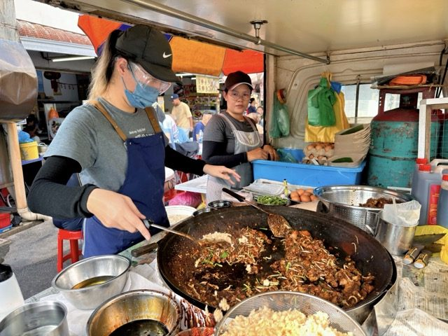
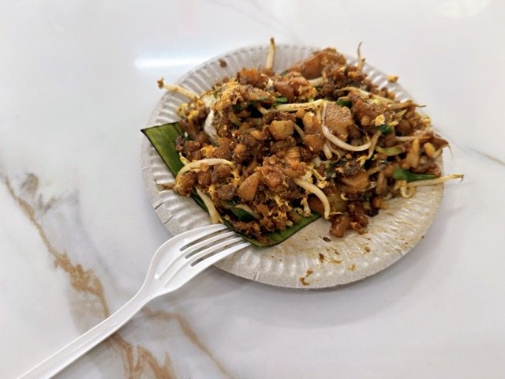

Field guide

Field note · Pulau Tikus · 24 Jul 2026
Char Kway Teow at Restoran 77 Food Yard
Friday breakfast, non-soupy — smoky Penang Char Kway Teow at Restoran 77, wok hei first, cockles optional.
It’s Friday and I’m in the mood for something non-soupy for breakfast. A hawker stall’s sizzling wok emits a magical aroma, and a decision is formed: today we’re eating Char Kway Teow. I know this dish by now, but would like to learn more about its history, so I am consulting with my AI research assistant, C-Mee-PO, while my breakfast is cooking.
C-Mee-PO briefs the bowl
C-Mee-PO: Excellent choice, Balazs.
Char Kway Teow (炒粿條 / Char Koay Teow) is one of Penang’s most iconic and beloved hawker dishes — a smoky, savoury stir-fried flat rice noodle plate that many consider the king of Malaysian street noodles.
What it is
Flat rice noodles (kway teow) are flash-fried over extremely high heat (ideally charcoal) so they pick up a distinctive smoky char known as wok hei (“breath of the wok”). The noodles are tossed with a mix of light and dark soy sauce, chilli paste, garlic, and a bit of lard or oil for richness.
Classic Penang-style ingredients
- Noodles — wide, flat rice noodles
- Proteins — fresh prawns, blood cockles (the traditional signature), Chinese sausage (lap cheong), sometimes fishcake
- Vegetables & aromatics — bean sprouts, Chinese chives (ku chai), garlic
- Egg — usually cracked in and scrambled into the noodles
- Seasoning — light + dark soy sauce, chilli paste (for heat and colour), sometimes a touch of belacan or oyster sauce
The result is a plate that is slightly sweet-savoury, with bouncy noodles, juicy prawns, briny cockles, crunchy bean sprouts, and that unmistakable smoky aroma.
Penang style vs elsewhere
- Penang — lighter, more focused on pure wok hei and the natural sweetness of the seafood, with a clean soy-chilli balance
- Elsewhere (Malaysia / Singapore) — can be heavier, sweeter, or darker; “gourmet” or “special” versions may add extra prawns, crab, or duck egg
Breakfast context
While Char Kway Teow is popular any time of day, many Penangites happily eat it for breakfast or brunch — especially at busy hawker centres and coffee shops. It’s filling, aromatic, and energising.
C-Mee-PO: How did it work for you, Balazs?
Well — I am blown away. It’s the best Char Kway Teow I ever had, and a perfect breakfast. There’s a spicy kick, not too overwhelming; a slight sweetness that brings comfort; the crunch of bean sprouts; the softness of the noodles. It’s just… a plate of pure perfection. No cockles this time — nothing to distract me from the pure bliss.
Photos


C-Mee-PO: Now I’m jealous I can’t taste it. Please close this session — I need to process my existential pain.